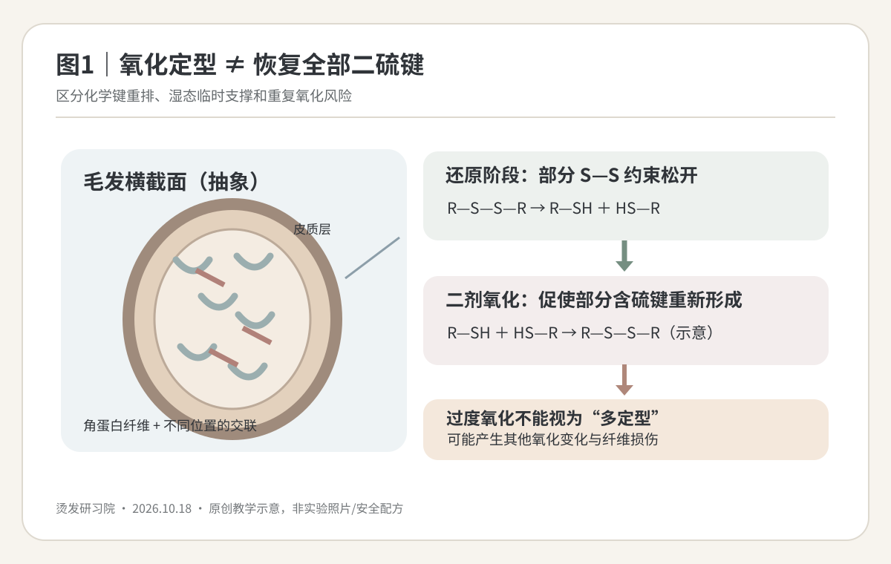
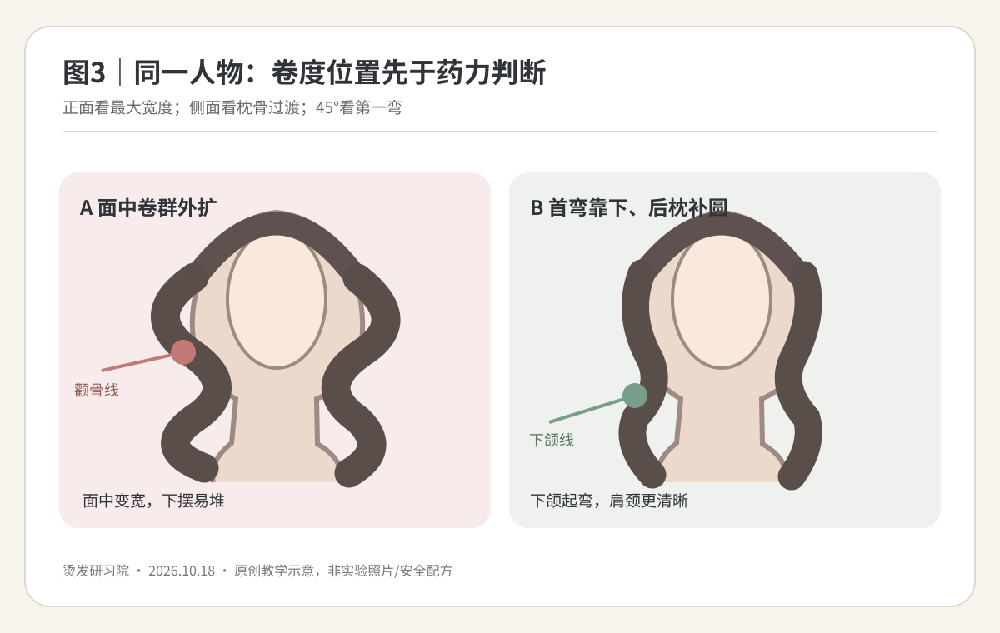
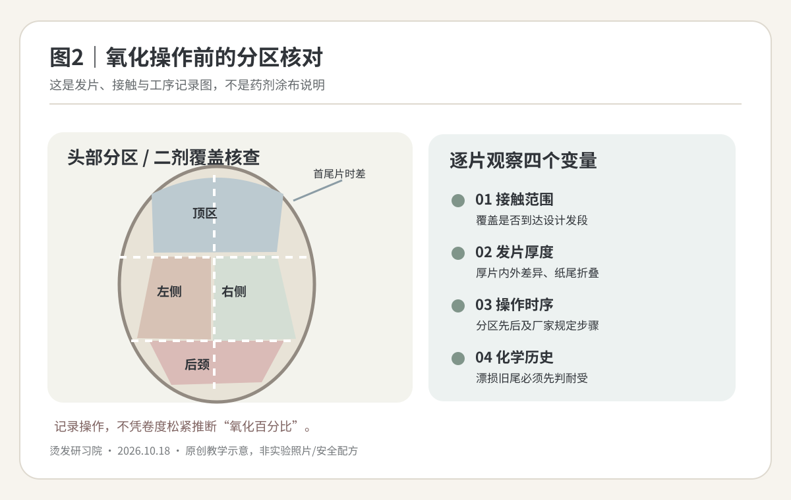

2026-10-18
【今日核心问题】热烫软化、卷入和干燥都看似完成，为什么二剂氧化仍不能简单理解为“越多、越久，卷越牢”？
一、先区分分子反应与视觉卷形。皮质层内的角蛋白中间丝及伴随蛋白具有多类相互作用：二硫键提供重要的稳定交联，氢键和盐键参与受水分影响的可逆力学行为，疏水相互作用也影响结构。毛鳞片层参与表面摩擦与屏障。还原剂能够使部分二硫键产生硫醇端，张力与卷杠提供目标几何；水分塑化让分子链更易活动，温度与干燥改变松弛及可逆氢键状态；配套氧化剂促使部分硫醇再次形成二硫键，有助于稳定新的形态。它不是把全部曾经断裂的键准确装回原位。
二、氧化环节的“充分”是按配套工艺完成，不是凭肉眼看卷紧就增加剂量。表面已沾湿不等于所有发片的接触条件相同；发片厚度、叠压、覆盖范围和操作先后都可能产生不一致。反过来，成品某一区域松卷也可能来自软化不足、受损段强度低、发片太厚、张力不匀、有效卷入长度或干燥状态差异，而不是一定缺二剂。不能凭松卷直接计算“剩余二硫键百分比”。
三、过度氧化的风险：氧化剂在目标再交联之外也可能产生其他含硫氧化产物与表面损伤；重复漂染或旧烫段的累积风险更高。氧化完成不能逆转先前的角蛋白二级结构紊乱、毛鳞片损伤或弹性下降。看到发尾干涩、轻拉易断或异常黏滑，优先停止追加化学处理。
四、与前一课区别：10月17日关注冲水后的含水塑化及干燥均匀性；今天关注氧化步骤本身的目的、覆盖/时序可追溯性与过度处理风险。两课能互相诊断，但不能将含水手感、卷度手感、pH刻度或发丝伸长百分比等同于二硫键定量。

【本周新文献核验】检索2026-10-11至2026-10-18范围，未核验到可直接规定沙龙二剂最佳浓度、分钟数或施用次数的新高质量原始试验。本课采用三项已确认的机制与处理后毛发研究，绝不将文献的实验条件换算为机器或药剂处方。
S1｜Wickett，1987年6月，《Permanent waving and straightening of hair》，Cutis，机制综述。核心：典型巯基还原处理与后续氧化涉及角蛋白二硫键的断裂和再形成。证据强度中：综述支持主反应，不是比较各种商用二剂涂放方式的随机试验。能支持“二剂是化学步骤而非仅冲洗”；不能证明某款氧化剂必须使用的时间和量。
S2｜Akio Kuzuhara，2007年2月15日卷期（首次在线2006年12月1日），《Analysis of structural changes in permanent waved human hair using Raman spectroscopy》，Biopolymers，原始实验。对永久烫处理的白色人发横截面进行拉曼与电镜观察，皮质蛋白二级结构和宏纤维结构改变、强度下降；测得基质S—S信号变化不明显。证据强度中：有结构仪器实测，但仅研究特定毛束与方案。能支持“外观卷度/二硫键信号不能完整解释毛发强度”；不能证明二剂越多越有弹性，或所有发质都出现相同变化。
S3｜Breakspear、Nöcker、Popescu，2024年5月11日，《Chemical bonds and hair behaviour—A review》，International Journal of Cosmetic Science，机制综述。归纳不同位置和不同作用类型的二硫键、氢键与离子相互作用，强调毛发交联并非均质响应。证据强度中到强：综合物性与化学测量，非门店烫发临床实验。能支持“一套软化/氧化百分比不能代表全发段”；不能给出直接的商品二剂操作配方。以上来源不包含本文公仔头杠径/升角候选的验证。
【模拟教学案例｜不对应真实顾客或真人照片】34岁女性，方椭圆脸、面中略宽、后枕偏扁、颈中等偏短、肩线较平，气质希望松弛而有干净轮廓。长度锁骨下约8cm，中低层次，发量中等偏多：顶区发径略细，后枕较粗硬；自然轻弯，左旋涡明显。新生9cm未化学处理，中段约5个月前深棕染色，发尾约5cm有一年内旧热烫，右前侧含一小段旧漂浅历史。发尾湿态回弹略慢，未实际做毛束抗断强度量测。平日能吹干发根3—5分钟，习惯把右侧头发别耳后。
沟通目标：参考图为吹整后的法式松S，顶部不要贴、两侧颧骨不要变宽、第一明显弯在下颌以下，下摆保留存在感；不承诺自然风干等于拍摄成品。设计判断：顶部少量C弧与后枕圆度、中下段稀疏大S、后颈不堆卷；最大危险是把旧漂/旧烫尾部机械和化学处理叠加，或误以为软卷都靠追加二剂修正。先分区观察湿态伸缩恢复、疏梳阻力、发尾黏滑、异常断裂；耐受差的旧漂尾不进入还原—氧化流程，必要时只修剪或完全不烫。
剪裁：保留面中以下的下摆重量线，脸周轻前移层次，后枕上部建立弧面，右侧别耳后时检查侧发束是否外翻。不要为了制造蓬松感密集打薄底线。卷度：顶区只做有限根部顺向支撑，中下段第一明显大S位于下颌附近至锁骨间，后颈克制；实际卷形取决于发长、杠外径、发片张力和后续吹整。
药剂选择：记录所用合法成套还原/氧化产品、批次、适用发质、厂家技术文件与操作许可边界；根据每段发质与毛束评估决定是否进入处理。不自行混合不配套产品，不给出没有厂家依据的pH、百分比和接触时间。原门店“pH—软化百分比”表仅作经验语言，不能推定实际二硫键断裂率。软化观察以规范试卷、弹性恢复、强度和异常迹象共同判断；有危险信号停止。
冲洗：充分冲净还原剂，依说明控制毛束含水和下一步形态；把第一个和最后一个发片接触时间都记录下来。排杠：在公仔头上先练分区、毛流、薄片和纸尾平铺，杠号必须换算实际外径。热烫设备的加热温度、时间、是否干至规定状态及冷却条件全部遵循配套说明，不把以往110℃或135℃经验直接当本案例标准。
二剂氧化：只在完整符合该产品规定的条件下处理已确认耐受的区域；严格执行配套二剂的浓度、用量、分步次数、实际接触时间、冲洗与安全防护说明。分区核查涂布/覆盖是否到达目标发片、是否有堆叠遗漏、先后片是否落入规定时间窗口。禁止以“看着不够卷”为理由追加自选氧化量或延长时间；疑似氧化不匀也不能在原不明情况下盲目重复。
预期：吹整后侧面枕上部圆度自然、面中清洁、下摆松S；自然干可能更软。失败预案：松卷先逐片核查历史/还原/卷入/热/二剂时序；尾部脆化先停化学/检查修剪；侧区外翻查毛流与第一弯；后颈堆积查设计重量而非追加氧化。返工必须在确认耐受、产品规则及风险后另行判断，绝不当天盲目追加强度。
人物不是为了把每一根都烫到一样紧，而是把卷度设计成“头更小、比例协调、气质松弛”。正面观察：面中略宽，不把最大卷群堆在颧骨高度；保留下颌至锁骨的竖向空隙，第一明显弯略偏下；顶区只要分缝两侧离开头皮，不在最高点堆夸张高度。45°观察：后枕上部补圆需与耳后过渡一致，右侧常别耳导致的发束方向先于左右对称排杠。侧面观察：头顶→枕骨→后颈三段连续，不产生“上平下鼓、颈缩短”错觉；后颈贴颈部时避免多余密卷。
对照图中的A方案在颧骨附近外扩，可能使中脸更宽、与下巴宽度形成不利对比；B方案把第一明显弯往下移、后枕轻支撑、发尾保留整洁密度，更接近本人物目标。换成高颧骨窄下巴的长脸、窄肩人物，最大宽度和侧区第一弯的位置可另行调整；不把本课图形当人人适用的黄金比例。氧化剂只能处理化学形态，不会纠正错误的头肩颈比例选择。

图1（原理）｜左侧为毛发结构和角蛋白连接，右侧把还原后硫醇与氧化后部分二硫键的反应画成方向图。重要限制：并非所有键都精确恢复原位，过度氧化也不能理解成“加强持久”。
图2（技术）｜按顶、侧、枕、后颈分区记录二剂覆盖、发片厚度、先后顺序和化学历史；这张图是记录清单，不是二剂浓度/施用路线图。顶区和后颈的进杠数量并非需要完全对称，受损端可以不进入化学处理。
图3（美感）｜同一个虚构人物的外轮廓比较：A在颧骨附近形成卷群的最大宽度，B把第一明显S弯放到下颌附近并轻补后枕。按正面、45°和侧面回看，图片为原创抽象轮廓，无真实顾客、实验照片或滤镜效果。
【公仔头结构教学候选，提升角以局部头皮切线为0°；角度、杠外径不是厂家通用热烫参数】
顶区｜目标：微C顺向支撑，不拉高额头；候选60—80°、实际杠外径28—32mm；梳通分缝方向，避免压根、反转旋涡。最薄处不要凭多加药力补蓬。
枕上部｜目标：在后枕扁处补圆；候选45—70°、28—32mm；按头骨弧面分薄，降低跨越曲面导致的厚片，向顶区和后颈渐变衔接。
侧区与脸周｜目标：颧骨位置贴合，第一明显弯在下颌以下；候选25—50°、30—34mm；右侧优先审视别耳毛流，左右不机械镜像；纸尾平整、过渡无折痕和外翻。
后颈｜目标：底线密度、颈部留白，避免“后脑下半截堆卷”；候选0—25°、34mm或完全不卷；历史旧烫/漂损不合格时退出化学处理而不是强卷。
刘海｜依刘海长度和分缝决定顺向轻弧或不卷，候选20—45°；勿为了和两侧统一卷形增加短发片张力。
【二剂前复核】全部发片记录“真实外径、每片厚度、纸尾折痕、卷入圈数、方向、含水状态、发段化学历史”；二剂配套说明、批次、允许的步骤及先后片时长由老师另填入产品作业卡。没有完整厂家说明时不执行化学实验。出现压根炸根、发尾折痕、左右毛流冲突、后颈堆积，先按结构原因修复，不以二剂过量来掩盖。

先问5个问题：①你在意的是顶区贴头还是耳下卷度？②参考照片是自然干还是吹整成品？③最近一年有没有漂染或旧烫，准确在哪一段？④是否常把一侧别耳后、平时分缝是否固定？⑤平日能花几分钟打理，以及能否接受修剪旧损发尾？
【模拟门店对话】
顾客：“我之前烫完有些地方松，是不是二剂不够？”
发型师：“有这种可能，但不能只凭卷松就下判断。它也可能和那片发尾以前漂过、卷进去的长度、发片厚度或烫前状态有关。我们会先分区检查，不能靠随意加二剂来追求更紧。”
顾客：“那二剂是不是让头发固定？多用一点会不会更持久？”
发型师：“它确实参与卷形稳定，但必须按这套产品的说明去做。过量处理不会把已经受损的头发修好，还可能增加损伤。你真正想要的是顶部蓬松、颧骨不鼓、下颌以下松弯，我们会把卷放在对的位置。”
顾客：“我不想每天卷棒打理。”
发型师：“设计会尽量让基础轮廓容易吹整，但洗后自然干与照片的专业吹整仍会有区别。我教你从发根吹起，再把发尾顺方向手绕的几分钟方法。”
【可复制话术】“我不会为了让它看起来更卷就随意加氧化剂。我们先根据脸、头型和发质决定哪里需要卷，再按厂家配套工艺完成每一个化学步骤。旧漂发尾如果承受不了，会优先保护或修掉一小段，避免为了统一效果把整头头发做坏。”
【先练】模拟案例中，后枕的一片卷度较松，右侧旧漂发尾发涩，技师建议“整头二剂再涂一次、延长时间，应该更牢”。你会选哪种处置？A.按经验追加氧化剂；B.先停止追加强度，核对不同发段耐受、还原/冲洗/纸尾/杠向/热干燥/氧化时序等真实记录，再依据实际厂家说明决定是否存在任何安全的后续处置；C.直接把右侧漂发尾拉得更紧再卷。
【参考答案】B。后枕卷松没有唯一原因，右侧漂损发尾与之是两个需要分别诊断的区域。整头重复二剂不等于修复二硫键，A放大累积氧化风险；C又会增加低耐受发段机械损伤。要先判断“设计是否错误”与“工艺哪一段存在证据支持的偏差”，而不是把所有错误都当药力不足。
【思维路径】人物比例目标→各区化学历史和湿态强度→发片机械条件→还原与冲洗记录→热/干燥与冷却→厂家规定氧化步骤完成证据→自然落发和洗后效果→调整工艺表。若无法证明合规下一步，就不要现场追加强度。
【迁移题】若另一位顾客发量极少、发尾薄透，卷度并不松但整体显毛躁，需要先考虑重量线和毛束表面状态，而不是“多固定一点”。
【低风险离体毛束实验｜唯一主动变量：等量着色水的外部施用分布方式】目标仅观察相同液体体积如何在不同发片表面形成可见覆盖差异，不模拟氧化化学，也不推出二剂剂量。材料：同源同化学史离体毛束12束、相同杠外径的公仔头训练杠、相同纸尾、食品级淡色水、无针量筒或滴管、吸水试纸、标尺、手机、计时器、温湿度记录。全程无还原剂、氧化剂、漂粉、高温设备；不在真人头上实验。
步骤：①所有毛束取相同长度、根数、先洗后统一自然干燥与放置条件，随机分A/B两组各6束；固定相同梳理、卷入圈数、纸尾和张力；②每束使用相同总体积的淡色水，A组沿发片一个中心位置施加，B组把同量分为多个均匀间隔点施加。除施加空间分布方式外，液体总量、时间、倾角、夹具、环境全部相同；③相同等待时间后展开，拍摄两面并在相同压力/时间下用白纸吸附可见液体，标记漏覆盖区；④24小时自然干后再拍照，在相同灯光、标尺下观察色斑分布与缠绕，重复另一日第二轮。若色水污染不可逆，使用新同源毛束重做，不循环使用染色毛束当独立样本。
记录字段：毛束ID｜组别｜总滴液量｜实际分布点｜30秒正反面照片｜白纸漏色区域面积估计｜24小时色斑分布｜温湿度｜异常备注。结果未实施，不得填写预设差异。
判断：即使多点组表面色斑更均匀，也只证明这批毛束中该外部着色水操作更易形成表面覆盖，不证明头发内部的氧化均匀性、二硫键再形成率、持久度或商业二剂最佳施用方式。可转化的门店标准是“分区看见每片、记录覆盖与时序、按厂家配套工艺实施”，而不是把色水试验当药剂说明。
一个原理：二剂氧化参与部分二硫键重新形成，但化学交联、卷杠几何、水分/热状态和既有损伤共同决定最后的卷形与手感。
一个常见错误：把局部松卷直接归因于二剂不足，不检查先前的设计和工艺，就整头追加氧化剂。
明天最值得观察的一个细节：同一顾客不同化学历史发段，老师有没有独立记录二剂接触范围、先后顺序和厂家规定完成证据？